Contents
%Ebsd Data is stored in a structure that has many properties %If you type the name of your ebsd structure, matlab will output a summary clear all import_excel_data ebsd %Note the names of the various phases are listed. To select a single phase %you can specify it by its name or by using conditional indexing to select %by phased number: ebsd('Zirconium') ebsd(ebsd.phase==1) %though some of the properties are listed, if you want to see a list, type %in "ebsd." (without quotes) to the command line and press the tab key. %Matlab will open a list of properties available. This works for most %structure types in Matlab. Feel free to experiment with the different %properties to see what kind of information you can access.
ebsd = EBSD (<a href="matlab:docmethods(ebsd)">show methods</a>, <a href="matlab:plot(ebsd)">plot</a>)
Phase Orientations Mineral Color Symmetry Crystal reference frame
0 24905 (8%) notIndexed
1 213854 (69%) Zirconium light blue 6/mmm X||a*, Y||b, Z||c
2 71441 (23%) ZirconiumBeta light green m-3m
Properties: bands, bc, bs, error, mad, x, y
Scan unit : um
ans = EBSD (<a href="matlab:docmethods(ans)">show methods</a>, <a href="matlab:plot(ans)">plot</a>)
Phase Orientations Mineral Color Symmetry Crystal reference frame
1 213854 (100%) Zirconium light blue 6/mmm X||a*, Y||b, Z||c
Properties: bands, bc, bs, error, mad, x, y
Scan unit : um
ans = EBSD (<a href="matlab:docmethods(ans)">show methods</a>, <a href="matlab:plot(ans)">plot</a>)
Phase Orientations Mineral Color Symmetry Crystal reference frame
1 213854 (100%) Zirconium light blue 6/mmm X||a*, Y||b, Z||c
Properties: bands, bc, bs, error, mad, x, y
Scan unit : um
Plotting EBSD
%By default, matlab plots ebsd data by phase (if you have a single phase %material, this means you won't see much) plot(ebsd)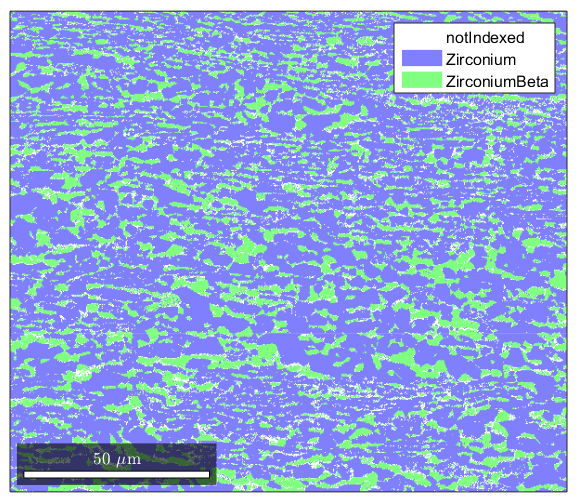
Plotting ebsd properties
%If you want to plot something else on an EBSD map, you can do so: %here is a plot of the band contrast figure(1) plot(ebsd,ebsd.bc) colormap('gray'); %We can plot orientations, but only for one phase at a time: figure(2) %remember, you can specify a phase within brackets when calling the ebsd structure plot(ebsd('Zirconium'),ebsd('Zirconium').orientations) %here is some code that will plot an inverse pole figure showing how the %colors in figure 2 relate to orientation figure(3) oM=ipdfHSVOrientationMapping(ebsd('Zirconium').orientations); plot(oM)
I'm going to colorize the orientation data with the standard MTEX colorkey. To view the colorkey do: oM = ipdfHSVOrientationMapping(ori_variable_name) plot(oM)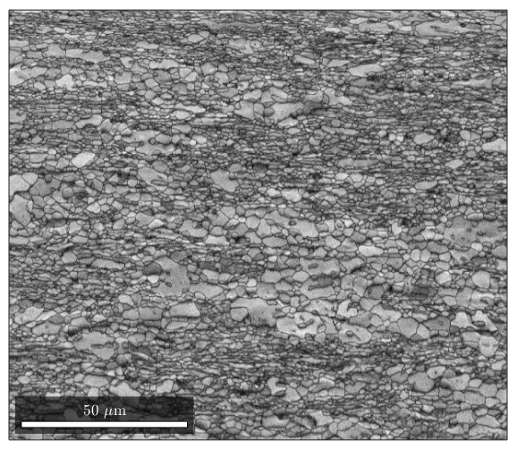 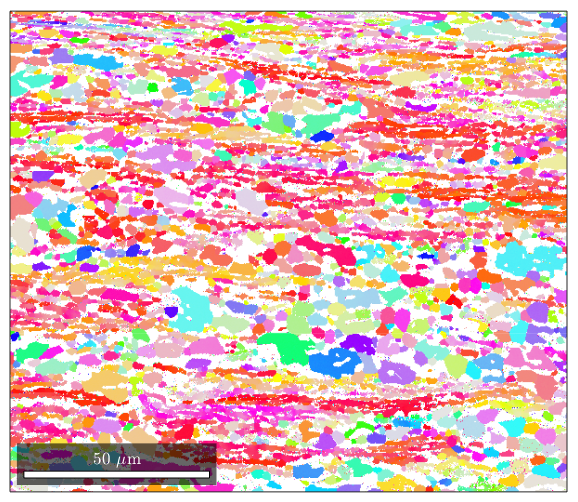 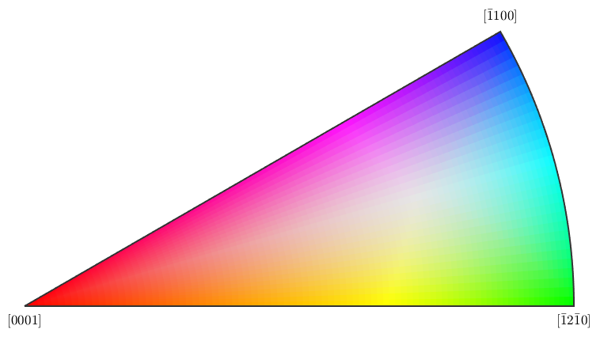
Grain reconstruction
%MTEX can reconstruct grains from ebsd data. %calcGrains takes in ebsd and will define a grain boundary as any point %where there is a change in orientation of 5 degrees or more. It outputs a %list of grains, and gives the ebsd structure new properties called grainId, %and mis2mean. GrainId tells which grain each pixel in the map belongs to, %and mis2mean is the misorientation of each pixel to the mean orientation %of its grain. [grains,ebsd.grainId,ebsd.mis2mean] = calcGrains(ebsd,'angle',5*degree); %We can plot the grains now figure(1) plot(grains) %Note that MTEX has treated non-indexed areas as their own grains. If %you'd instead like MTEX to simply absorb non-indexed points into grains %formed by indexed points, you can issue this command instead (note that %instead of sending all of ebsd as an argument to calcGrains, we send only %the indexed parts) [grains,ebsd.grainId,ebsd.mis2mean] = calcGrains(ebsd('indexed'),'angle',5*degree); %We can plot the grains now figure(2) plot(grains)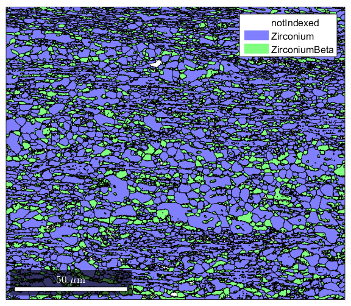 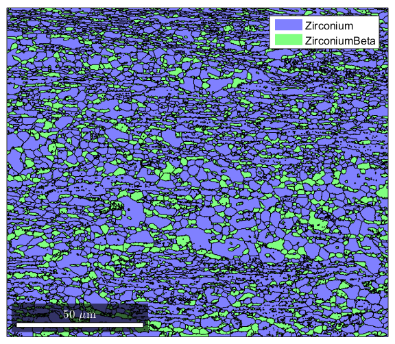
Grain Reconstruction 2
%Often you will see that ther are a lot of reconstructed grains that are %very tiny, perhaps even a single pixel. These are usually mis-indexed %points [grains,ebsd.grainId,ebsd.mis2mean] = calcGrains(ebsd,'angle',5*degree); %You can get rid of them and clean up your map a little by first running %grain reconstruction, then executing the following command to remove any %points that are in grains less than 3 pixels large: ebsd(grains(grains.grainSize<3))=[]; %Now we re-run grain reconstruction [grains,ebsd.grainId,ebsd.mis2mean] = calcGrains(ebsd('indexed'),'angle',5*degree); %Note that the map of the grains is a lot cleaner now figure(1) plot(grains)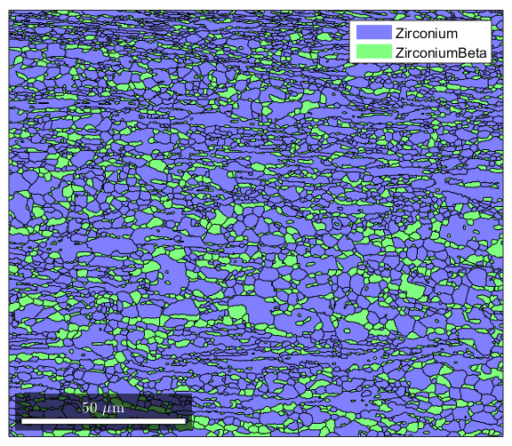
Combining plots with the hold command
%It's oftentimes useful to combine the raw ebsd data with the reconstructed %grain boundary data. Here's an example where we plot the orientation data %and use matlab's hold feature to add grain boundaries to the figure: figure(1) plot(ebsd('Zirconium'),ebsd('Zirconium').orientations); %now using the hold command we plot a property of grains called boundary. %This will outline the grain boundaries in black. We'll also set the %linewidth to 1.5 since the default lines are a bit too thin hold on plot(grains.boundary,'linewidth',1.5); hold off
I'm going to colorize the orientation data with the standard MTEX colorkey. To view the colorkey do: oM = ipdfHSVOrientationMapping(ori_variable_name) plot(oM)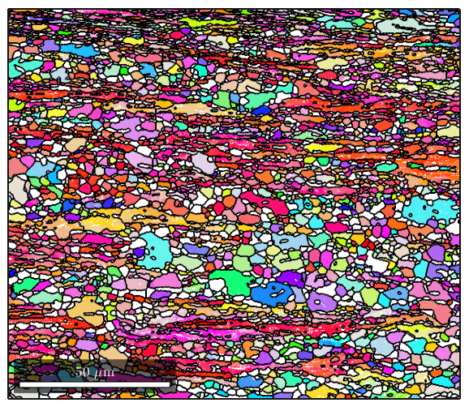
Getting grain statistics
%In MTEX, you can get a histogram of grain sizes by sending your grains %object to the funciton hist(). The number of bins can also be %specified.(default is 15) figure(1) hist(grains,20) %You can also use simple matlab functions to get useful information about %your grains %Here we calculate the median grain size for all the grains, as well as %each phase individually. (Note: grains.area returns the area in microns^2, %and grains.grainSize returns the area in number of pixels.) median(grains.area) median(grains(grains.phase==1).area) median(grains(grains.phase==2).area) %The grains object has many useful properties! Remember, you can see a list %of the properties in grains by typing "grains." (without quotes) into the %Matlab command line and pressing the tab key.
ans =
1.7709
ans =
2.5642
ans =
1.2681
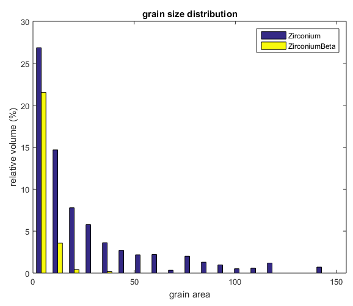 Plotting grain boundaries by angle
%This gets a little tricky because it takes advantage of the fact that you %can have multiple "layers" of properties in a single structure %first we'll define gB as the grain boundary information from grains gB=grains.boundary; %Next we define gBAA as the alpha/alpha grain boundaries gBAA=gB('Zirconium','Zirconium'); %gBBB will be the beta/beta grain boundaries gBBB=gB('ZirconiumBeta','ZirconiumBeta'); %we now have Matlab plot the grains plot(grains) %Using the hold command we plot GBAA nad GBBB and color them by their %misoreientaiton angle. This will let us show which grain boundaries are %high and which are low. We needed to do this for just the alpha/alpha and %beta/beta boundaries because MTEX doesn't know how to meaningfully find %misorientations between diffferent crystal structures hold on plot(gBAA,gBAA.misorientation.angle/degree,'linewidth',1.5) plot(gBBB,gBBB.misorientation.angle/degree,'linewidth',1.5) hold off %setting the colormap to 'jet' makes the colorcoding a bit nicer. It's just %a cosmetic thing. colormap('jet')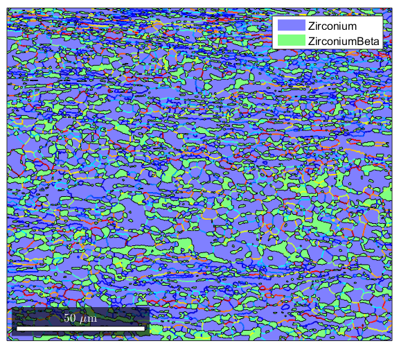
Plotting grain boundaries by misorientation axis
%In addition to the misorientation angle of grain boundaries, it is often %useful to know which crystallographic direction the misorientation is %occuring about %We will define the grain boundaries as in the previous section gB=grains.boundary; gBAA=gB('Zirconium','Zirconium'); %Now we define an axis that we are interested in. We define axisA as the %{10-10} plane normal. The last argument is the crystal symmetry for the %phase in question, which must be provided so MTEX knows what kind of %structure your Miller variable goes with axisA=Miller(1,0,-1,0,ebsd('Zirconium').CS); %Now, we find which boundaries have a mistorientation axis close to the %ones we've defined. We define axisGBA as a conditional %statement, so we can use it for conditional indexing. The line below %will find all grain boundaries that have a misorientation axis within 2 %degrees of the one we defined. axisGBA=angle(gBAA.misorientation.axis,axisA)<5*degree; %Here we plot the grains, then use the hold command to add the special %grain boundaries we're interested in. The alpha/alpha grains with their %{10-10} misorientation axis plot(grains) hold on plot(gBAA(axisGBA),'linecolor','red','linewidth',1.5); hold off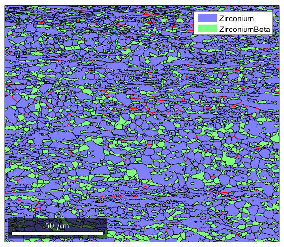
Advanced grain boundary analysis
%This section will show how to pick out very specific grain boundaries %where both the misorientation axis and angle are defined. This can be %used for twin identification, which will be shown in another section, but %here we will use it to look at the Burgers relationship between the alpha %and beta phase. %We start by defining 4 Miller directions, such that a1//b1 and a2//b2. %This will let us define the orienation relationship betweeen alpha and %beta phases a1=Miller(0,0,0,2,ebsd('Zirconium').CS); b1=Miller(1,1,0,ebsd('ZirconiumBeta').CS); a2=Miller(1,1,-2,0,ebsd('Zirconium').CS); b2=Miller(1,1,1,ebsd('ZirconiumBeta').CS); %Next, we create an orientation map from alpha to beta based on the sets of %parallel directions we just defined. ab=orientation('map',a1,b1,a2,b2,ebsd('Zirconium').CS,ebsd('ZirconiumBeta').CS); %We we now want to get just the grain boundaries that are alpha/beta %boundaries gBAB=grains.boundary('Zirconium','ZirconiumBeta'); %Now we will take all alpha/beta boundaries that have a misorientation %within 5 degrees of the relationship we defined isBurgers=angle(gBAB.misorientation,ab)<5*degree; %Finally, we plot the results using conditional indexing: plot(grains); hold on plot(gBAB(isBurgers),'linecolor','red','linewidth',1.5); hold off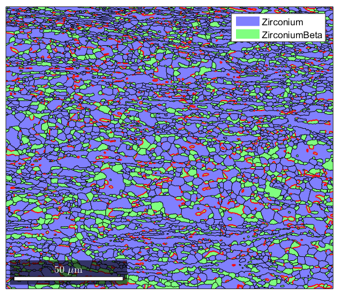
Twin Identification
clear all %Twins in Zr and other materials, we sometimes see a lot of twins formed %during deformation. It's really easy to pick out twins from EBSD data %with MTEX. The MTEX help page on this is actually pretty good: % http://mtex-toolbox.github.io/files/doc/TwinningAnalysis.html %First we'll import a dataset from a tensile sample that has been heavily %deformed import_increment3; figure(1) plot(ebsd('Zirconium'),ebsd('Zirconium').orientations); %Now run grain reconstruction. This map has some poorly indexed points, so %we'll get rid of any grains smaller than 3 pixels. [grains,ebsd.grainId,ebsd.mis2mean] = calcGrains(ebsd('indexed'),'angle',5*degree); ebsd(grains(grains.grainSize<3))=[]; [grains,ebsd.grainId,ebsd.mis2mean] = calcGrains(ebsd('indexed'),'angle',5*degree); %Now we pick out the Zr/Zr grain boundaries: bounds=grains.boundary; boundsZr=bounds('Zirconium','Zirconium'); %Now we define the twinning orientation relationship. In Zr the %relationship is as defined below, where t1//t2 and t3//t4 t1=Miller(1,1,-2,0,ebsd('Zirconium').CS); t2=Miller(2,-1,-1,0,ebsd('Zirconium').CS); t3=Miller(-1,0,1,1,ebsd('Zirconium').CS); t4=Miller(1,0,-1,1,ebsd('Zirconium').CS); twinning = orientation('map',t1,t2,t3,t4) %Now we check which grain boundaries are twins by setting a condition to %check if the boundary's mistorientation is within 5 degrees of the %orientation relationship, then use conditional indexing: istwinning=angle(twinning,boundsZr.misorientation)<5*degree; twinboundaries=boundsZr(istwinning); %Now plot the data, using the hold command to %plot the normal boundaries in black and the twin boundaries overtop in red. figure(2) plot(ebsd('Zirconium'),ebsd('Zirconium').orientations) hold on plot(grains.boundary,'linewidth',1.5); plot(twinboundaries,'linewidth',1.5,'linecolor','red'); hold off %If you like, there's a command to merge twins with their parents, so that %they will be considered a single grain: [mergedGrains,parentId] = merge(grains,twinboundaries); %Now we can plot our merged grain boundaries over the data: figure(3) plot(ebsd('Zirconium'),ebsd('Zirconium').orientations) hold on plot(mergedGrains.boundary,'linewidth',1.5); hold off %This also lets you see what your untwinned grain size looks like: median(grains.area) median(mergedGrains.area) %Finally, you can get the twin area fraction like this. First we get the %grain id numbers of all the twins. The unique() function makes sure %there's no duplicates. twinId = unique(boundsZr(istwinning).grainId); % Next we ge the sum of all the twins, and divide them from the sum of the % areas of the entire set of grains twinFraction=sum(area(grains(twinId))) / sum(area(grains)) * 100
I'm going to colorize the orientation data with the
standard MTEX colorkey. To view the colorkey do:
oM = ipdfHSVOrientationMapping(ori_variable_name)
plot(oM)
twinning = misorientation (<a href="matlab:docmethods(twinning)">show methods</a>, <a href="matlab:plot(twinning)">plot</a>)
size: 1 x 1
crystal symmetry : Zirconium (6/mmm, X||a*, Y||b, Z||c)
crystal symmetry : Zirconium (6/mmm, X||a*, Y||b, Z||c)
Bunge Euler angles in degree
phi1 Phi phi2 Inv.
330 94.7957 330 0
I'm going to colorize the orientation data with the
standard MTEX colorkey. To view the colorkey do:
oM = ipdfHSVOrientationMapping(ori_variable_name)
plot(oM)
I'm going to colorize the orientation data with the
standard MTEX colorkey. To view the colorkey do:
oM = ipdfHSVOrientationMapping(ori_variable_name)
plot(oM)
ans =
2.3553
ans =
2.5126
twinFraction =
14.7671
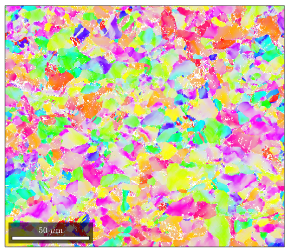 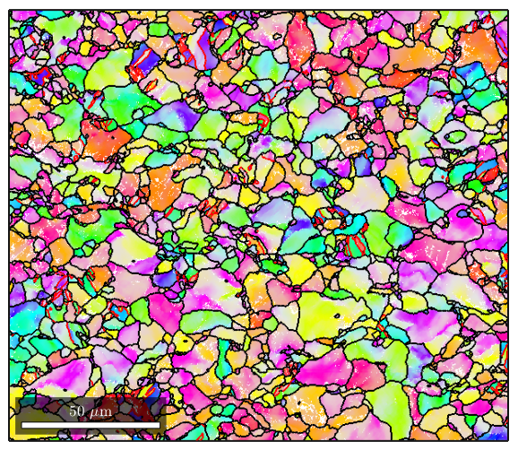 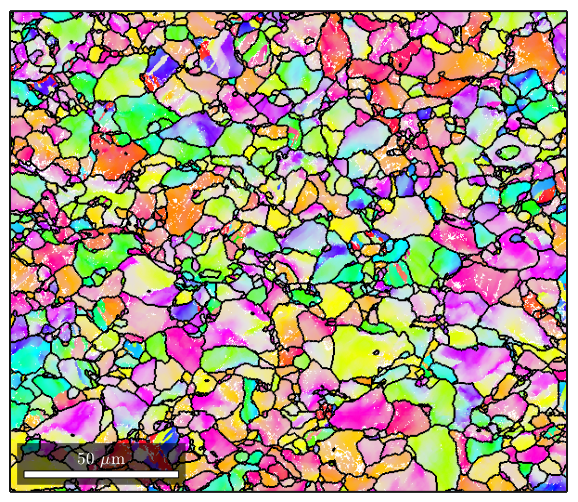